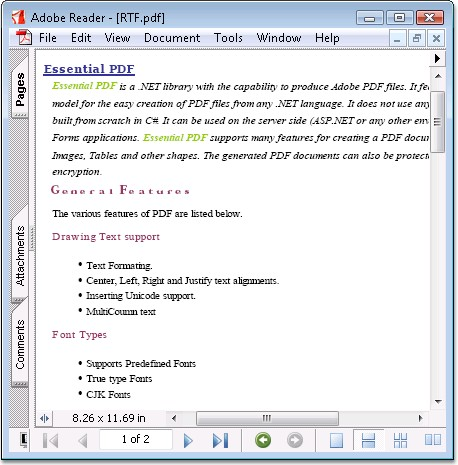

RTF (Rich Text Format) is a standard specification for the formatting of documents. They are ASCII files with special commands to indicate formatting information such as margins and fonts.
Essential PDF supports drawing an RTF text into a PDF document by converting it as a bitmap or metafile image.
· Converting RTF text into a bitmap file, provides improved performance
· Converting RTF text into a metafile image provides high resolution and searchable text.
The following code illustrates how to draw an RTF text into bitmap and metafile formats.
|
[C#]
//Draw RTF as metafile PdfMetafile metafile = ( PdfMetafile )PdfImage.FromRtf( text, bounds.Width, PdfImageType.Metafile ); PdfMetafileLayoutFormat format = new PdfMetafileLayoutFormat();
//Allow pagination without any breaks at page breaks. format.SplitTextLines = false;
//Draw the image. metafile.Draw( page, 0, 0, format );
//Draw RTF as Bitmap bitmap = PdfImage.FromRtf( text, bounds.Width, PdfImageType.Bitmap); bitmap.Draw(page, 0, 0, format) |
|
[VB.NET]
'Convert it as metafile image. Dim metafile As PdfMetafile = CType(PdfImage.FromRtf(text, bounds.Width, PdfImageType.Metafile), PdfMetafile) Dim format As PdfMetafileLayoutFormat = New PdfMetafileLayoutFormat()
'Allow the text to flow multiple pages without any breaks. format.SplitTextLines = False
'Draw the image. metafile.Draw(page, 0, 0, format)
'Draw RTF as Bitmap Dim bitmap As PdfImage = PdfImage.FromRtf(text, bounds.Width, PdfImageType.Bitmap) bitmap.Draw(page, 0, 0, format) |

Figure 36: RTF Support